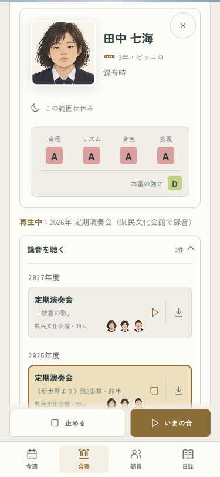
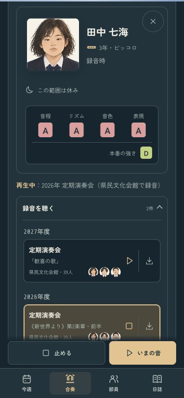
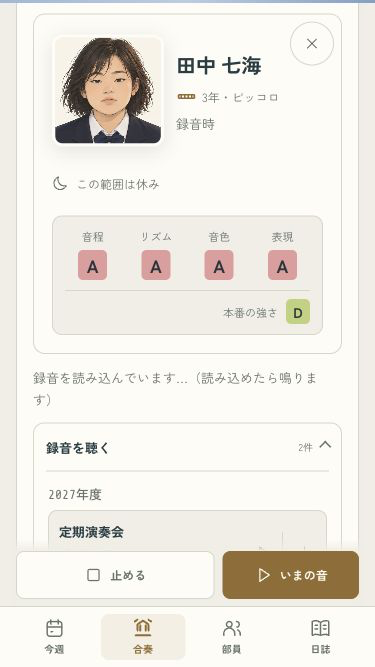
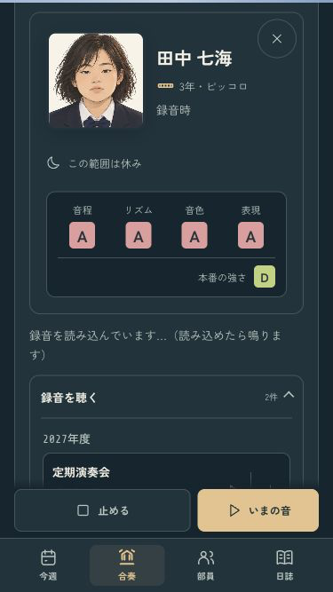

B · 舞台の中へ
休みの小節も、同じ舞台に。
出番のない録音の区間は、本人の顔の下に「この範囲は休み」と表示します。音のない試聴で、みんなの演奏を無音にしません。


小さい画面と、読み込み待ち
375×667でも本人の顔と休みが見え、待っている間にも出番のあるパートを選べます。


全15曲・57範囲の出番、打楽器の試聴、待機後のパート、1年分の進行を確認済み。
iPhoneへ更新し、起動とプロセスを確認。実機の見た目と音はオーナー側で確認します。
ミラーリングなし · codex/design · pushなし · 変更と確認の記録